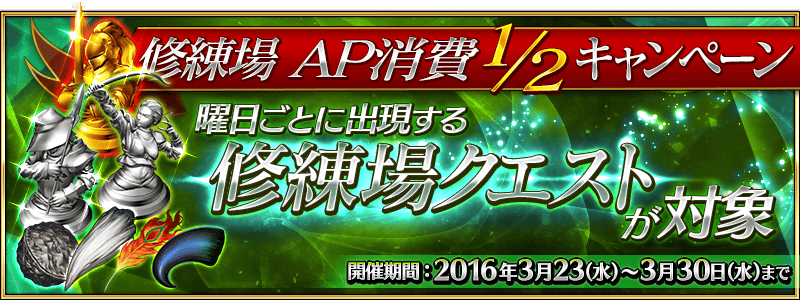

◆舉辦期間◆
2016年3月23日(三)15:00～3月30日(三) 12:59
◆宣傳活動概要◆
舉辦修練場AP消費1/2宣傳活動。
期間中每天在迦爾帝亞出現的修練場關卡初級、中級、上級、超級全部的AP消費量變為1/2。
修練場關卡可以獲得靈基再臨素材和技能強化素材做為戰利品。
無論如何藉此機會強化Servant吧！
◆対象クエスト◆
弓の修練場 初級、中級、上級、超級
槍の修練場 初級、中級、上級、超級
狂の修練場 初級、中級、上級、超級
騎の修練場 初級、中級、上級、超級
術の修練場 初級、中級、上級、超級
殺の修練場 初級、中級、上級、超級
剣の修練場 初級、中級、上級、超級
【各修練場關卡的難易度等】
| 難易度 | 推薦Lv | 消費AP | 通過報酬 |
|---|---|---|---|
| 初級 | 10 | 10→5 | マナプリズムｘ1 |
| 中級 | 25 | 20→10 | マナプリズムｘ2 |
| 上級 | 40 | 30→15 | マナプリズムｘ3 |
| 超級 | 60 | 40→20 | マナプリズムｘ4 |
※關卡通過報酬的マナプリズム只有初次通過才能獲得。
◆曜日關卡攻略的重點◆
請參考攻略推薦職階組成隊伍，挑戰曜日關卡！
曜日別關卡一覧
| 曜日 | 關卡名 | 做為戰利品獲得的主要道具 | 攻略推薦職階 |
|---|---|---|---|
| 月 | 弓の修練場
AP1/2
|
Archer的靈基再臨道具、Archer的技能強化素材道具 |  |
| 種火集め <槍・殺編> |
Lancer、Assassin、Berserker的經驗值卡 |   |
|
| 火 | 槍の修練場
AP1/2
|
Lancer的靈基再臨道具、Lancer的技能強化素材道具 | |
| 種火集め <剣・騎編> |
Saber、Rider、Berserker的經驗值卡 |   |
|
| 水 | 狂の修練場
AP1/2
|
Berserker的靈基再臨道具、Berserker的技能強化素材道具 | ALL |
| 種火集め <弓・術編> |
Archer、Caster、Berserker的經驗值卡 |  |
|
| 木 | 騎の修練場
AP1/2
|
Rider的靈基再臨道具、Rider的技能強化素材道具 | |
| 種火集め <槍・殺編> |
Lancer、Assassin、Berserker的經驗值卡 | |
|
| 金 | 術の修練場
AP1/2
|
Caster的靈基再臨道具、Caster的技能強化素材道具 | |
| 種火集め <剣・騎編> |
Saber、Rider、Berserker的經驗值卡 | |
|
| 土 | 殺の修練場
AP1/2
|
Assassin的靈基再臨道具、Assassin的技能強化素材道具 | |
| 種火集め <弓・術編> |
Archer、Caster、Berserker的經驗值卡 | |
|
| 日 | 宝物庫の扉を開け | QP | |
| 剣の修練場
AP1/2
|
Saber的靈基再臨道具、Saber的技能強化素材道具 | |
|
| 種火集め <ランダム編> |
Saber、Archer、Lancer、Rider、Caster、Assassin、Berserker的經驗值卡（隨機） | – |